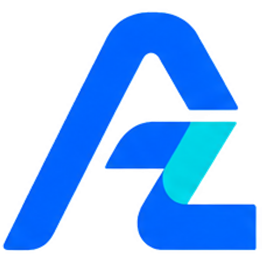

azmindigital
free guide · 03Make the pendulum reel for your brand
A badge on a string swings across your headline, and the words change where the string passes.
Why it works
It's 10 to 12 seconds, it moves from the first frame, and every swing shows one thing you do. Then it swings back to
one call to action. People watch it twice to read every word, which is exactly the signal Instagram looks for.
What you need (free)
- CapCut (phone or desktop) for the animation and sound
- Canva (free) for the images
- Your logo, and 4 short service words + 1 call to action
1 Plan your words
Two short lines per word, max about 8 letters per line. Alternate: service, call to action, service, call to action.
| Swing | Example |
|---|
| 1, 3, 5, 7 | SCROLL WEBSITES · LAUNCH PAGES · AI CHATBOTS · BOOKING SYSTEMS (your own services) |
| 2, 4, 6, 8 | COMMENT GUIDE (or DM US, FOLLOW US) in your brand colour |
2 Make the images in Canva
- Background: 1080 × 1920, one light plain colour.
- Words: one transparent PNG per word, same size (1080 × 1920), text in exactly the same place, very bold font.
- Pendulum: a transparent PNG 1080 × 3000. Draw a thin dark line from the exact centre of the canvas
straight down to a white circle with your logo. Because the line starts at the centre, rotating the image swings it
like a real pendulum.
azmindigitalfree guide · 03
3 Swing it in CapCut
- New project, 9:16. Add the background (12 s).
- Add the pendulum PNG as an overlay. Move it up until the circle sits just under your words (the centre of the PNG,
the pivot, ends up above the top edge).
- Keyframe the rotation: 0 s at −17°, 1 s at +17°, 2 s at −17°, and so on for 7 or 8 swings. End at 0° and
use ease-in-out on each keyframe so it slows at the ends like a real pendulum.
4 The wipe (the magic part)
- Put the old word and the new word on two overlay tracks, one above the other.
- On the new word add a Mask → Split (linear) mask. Rotate the mask to the same angle as the string and
keyframe its position so its edge follows the string through that swing. Invert it if the wrong side shows.
- Repeat for each swing. Tip: if this feels fiddly, simply cut to the new word at the moment the string crosses the
middle. It still looks good.
Menu names can differ slightly between CapCut versions and phone vs desktop.
5 Ending and sound
- Last 3 seconds: the pendulum stops, the circle moves to the middle, and your @handle and call to action appear.
- One "whoosh" sound per swing, placed at the fastest point (the middle of each swing). Add soft music underneath.
- Export 1080 × 1920, 30 fps. Add a clear cover.
How we built ours (for coders)
Ours is made in code: an HTML canvas with angle = A · cos(π · p) for each swing, the headline drawn twice and
clipped on each side of the string line, every frame saved and joined with ffmpeg. Ask an AI assistant:
Build an HTML canvas animation, 1080×1920, 12 s: a pendulum (thin line from above the top edge to a round logo badge) swings left and right 7 times. A two-line bold headline sits behind it; where the string passes, the text wipes from the old word to the next one (clip the text on each side of the string line). Words: <your list>. Then the pendulum settles, the badge moves to the centre and @yourhandle appears.
Follow @azmin_digital for a new free guide every week.
Comment DEMO on any reel to see our live website demos.